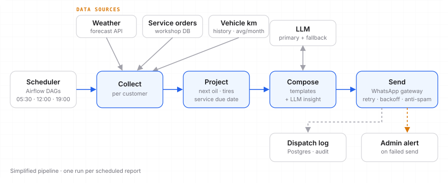

PitStop Notify
Mensageria proativa no WhatsApp. Em vez de esperar o cliente lembrar da revisão, a oficina manda todo dia a informação certa: o clima, o status do carro na oficina e um aviso quando a troca de óleo ou de pneus está chegando. Proactive WhatsApp messaging. Instead of waiting for customers to remember their service, the shop sends the right info every day: the weather, the car's status at the shop, and a heads-up when an oil change or new tires are coming due.
O que o cliente recebeWhat the customer gets
Exemplos ilustrativos (dados fictícios) dos relatórios que saem automaticamente em horários fixos ao longo do dia: Illustrative examples (fictional data) of the reports that go out automatically at fixed times during the day:
Hoje em Campinas: 18° → 29°, 80% de chance de chuva à tarde.
🔧 Dica: com pista molhada, vale conferir palhetas e calibragem dos pneus antes de sair. ☀️ Good morning, Carlos!
Today in Campinas: 18° → 29°, 80% chance of rain in the afternoon.
🔧 Tip: on wet roads, check your wipers and tire pressure before heading out. 06:30
✅ Diagnóstico
✅ Troca de pastilhas
🔄 Alinhamento e balanceamento
⏳ Lavagem e entrega 🚗 Your HB20 is at step 3 of 4
✅ Diagnosis
✅ Brake pad replacement
🔄 Alignment & balancing
⏳ Wash & pickup Previsão de entrega: hoje, 17h.Estimated pickup: today, 5pm. 12:00
Você rodou 1.240 km (média de 1.180 km/mês).
🛢️ Pela sua média, a troca de óleo deve chegar em ~3 semanas (10.000 km).
🛞 Seus pneus completam 1 ano em março: vale um rodízio na próxima visita.
Quer agendar? Responda SIM. 📊 Monthly summary
You drove 1,240 km (avg. 1,180 km/month).
🛢️ At your pace, your oil change is due in ~3 weeks (10,000 km).
🛞 Your tires turn 1 year old in March: worth a rotation on your next visit.
Want to book? Reply YES. 19:00
Revisão de viagem com check-up de 30 itens: freios, pneus, fluidos e iluminação.
Seu último check-up foi há 8 meses. Garanta seu horário antes do dia 20! 🎄 Hitting the road for the holidays?
Road-trip service with a 30-point check-up: brakes, tires, fluids and lights.
Your last check-up was 8 months ago. Book a slot before the 20th! 10:00
Projeção de revisãoService projection
O lembrete não é por data fixa. O sistema olha o histórico de quilometragem de cada carro, calcula a média mensal e projeta quando ele vai bater o próximo marco de manutenção. Assim o aviso chega na hora certa para quem roda muito e não incomoda quem roda pouco. Reminders aren't on a fixed date. The system looks at each car's mileage history, computes the monthly average and projects when it will hit the next maintenance milestone. That way the alert arrives on time for heavy drivers and doesn't bother light ones.
kmMédia de usoUsage average
Calculada a partir das leituras de quilometragem de cada visita e do histórico recente.Computed from the mileage readings at each visit and recent history.
🛢Marcos por kmMileage milestones
Troca de óleo, filtros e alinhamento disparam quando a projeção fica a poucas semanas do limite.Oil, filters and alignment trigger when the projection is a few weeks from the limit.
📅Marcos por tempoTime milestones
Pneus e revisão geral também têm limite de tempo (ex.: 1 ano), mesmo que o carro rode pouco.Tires and general service also have a time limit (e.g. 1 year), even if the car is barely driven.
Como funciona por trásHow it works behind the scenes

- AgendamentoSchedulingDAGs no Airflow disparam cada relatório no horário certo. Ativação e período são configuráveis por cliente, sem deploy.Airflow DAGs fire each report at the right time. Activation and period are configurable per customer, with no deploy.
- ColetaCollectionBusca dados de APIs externas (clima) e dos bancos internos (ordens de serviço, quilometragem).Pulls data from external APIs (weather) and internal databases (service orders, mileage).
- ComposiçãoCompositionTemplates fixos garantem formato consistente; quando falta dado, a mensagem diz isso explicitamente em vez de inventar.Fixed templates keep the format consistent; when data is missing, the message says so instead of making something up.
- Toque de IAAI touchUm LLM escreve só o resumo curto e a dica do dia, com um segundo provedor como fallback se o primeiro falhar.An LLM writes only the short summary and the tip of the day, with a second provider as fallback if the first one fails.
- EnvioDeliveryTexto e imagem pelo gateway de WhatsApp, com pausa entre envios para respeitar limites.Text and images through the WhatsApp gateway, with pauses between sends to respect rate limits.
ConfiabilidadeReliability
↻Retry com backoffRetry with backoff
Cada envio tenta de novo com intervalo crescente e valida a resposta do gateway.Each send retries with growing intervals and validates the gateway response.
!Alerta de falhaFailure alerts
Se o envio falha de vez, um administrador é avisado na hora, e tudo fica registrado.If a send fails for good, an admin is alerted right away, and everything is logged.
≠Anti-spamAnti-spam
Regras evitam repetir o mesmo alerta várias vezes no dia quando nada mudou.Rules avoid repeating the same alert several times a day when nothing has changed.
◐Modos de testeTest modes
Pré-visualização local que nunca envia e modo de envio para um único número de teste.Local preview that never sends, and a mode that sends only to a single test number.